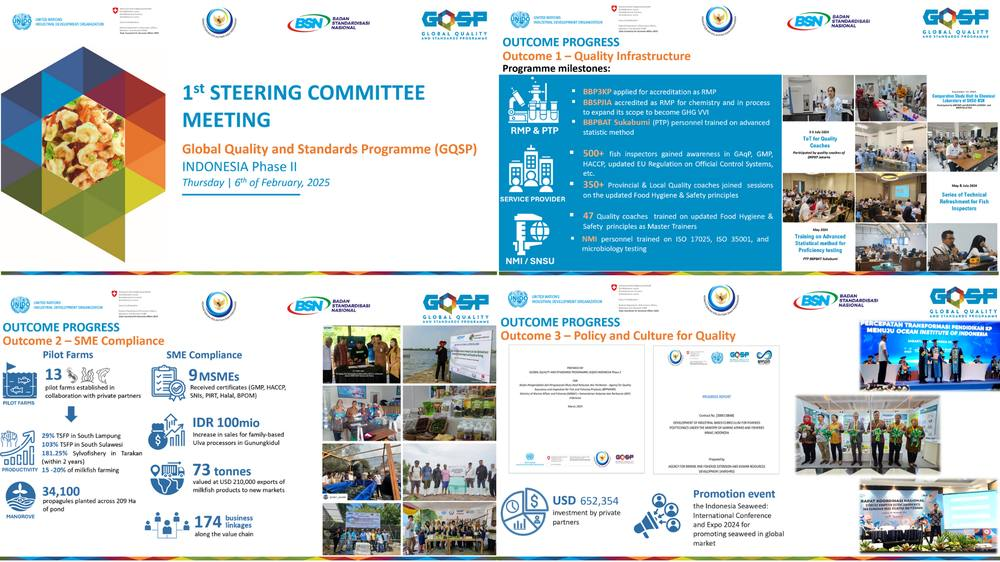

1st Steering Commitee Meeting GQSP Indonesia Phase 2

Jakarta, 6 February 2025 – The first Steering Committee Meeting (SCM) of the Global Quality and Standards Programme (GQSP) Indonesia Phase 2 (2023-2026) successfully organized in a hybrid format at the Ministry of Marine Affairs and Fisheries (MMAF). The meeting, officially opened by Mr. Budi Sulistiyo, Director General of Product Competitiveness (DG PC) at MMAF, gathered 84 participants, including representatives from MMAF, the Ministry of Industry, the National Standardization Agency (BSN), private sector associations, and international partners.
The meeting was chaired by Mr. Machmud, Executive Secretary of DJPDSPKP, as the National Project Coordinator (NPC) of GQSP Indonesia Phase 2. It focused on reviewing progress, aligning program activities with national priorities, and enhancing cooperation to boost the competitiveness of Indonesia’s fisheries sector.
Commitment to Strengthening Quality and Standards
Mr. Marco Kamiya, Head of the UNIDO Sub-Regional Office for Indonesia, the Philippines, and Timor Leste, reaffirmed UNIDO’s long-term commitment to Indonesia’s fisheries sector through GQSP. He highlighted the program’s achievements and ongoing efforts, including the development of a seaweed climate action initiative under the Green Climate Fund (GCF).
Ms. Violette Ruppanner, Head of Swiss Economic Cooperation and Development (SECO) in Indonesia, praised the programme’s strong partnerships, transparency, and alignment with national development goals. She underlined the importance of maximizing the allocated grant to enhance the fisheries sector’s sustainability and economic impact while ensuring adaptability to the new government’s priorities.
Strategic Directions for 2025 and Beyond
In his opening speech, Mr. Budi Sulistiyo outlined key strategic directions for the program:
- Program Evaluation & Integration – Strengthen the program by monitoring progress and setting clear 2025 partner selection criteria to position UNIDO-MMAF collaboration as an integrated initiative.
- National Priorities & Competitiveness – Align 2025 activities with national goals (food self-sufficiency, downstreaming, MBG) by enhancing shrimp, milkfish, and seaweed competitiveness through compliance with international standards.
- Regulatory Development – Formalize initiatives into academic manuscripts to support regulatory frameworks, ensuring global compliance and boosting Indonesia’s fisheries competitiveness.

Progress and Achievements
The 2024 annual report presented by Mr. Sudari Pawiro, National Chief Technical Advisor (NCTA), and Ms. Aniq Fadhillah, Chief Operations Officer (COO), detailed significant progress:
Outcome 1:
- Strengthened BBPBAT Sukabumi for proficiency testing
- Enhanced NMI/SNSU and RPM capacities
- Trained 800+ officials on fisheries quality assurance
Outcome 2:
- Established 13 pilot farms for shrimp, milkfish, and seaweed
- Increased MSME sales by IDR 100 million through Ulva processing interventions
- Created 174 business linkages across the value chain
Outcome 3:
- Launched an industrial-based curriculum for marine and fisheries polytechnics
- Secured USD 652,354 in private investment to support programme implementation
The meeting concluded with commitments from all stakeholders to enhance programme integration, regulatory development, and private-sector engagement, ensuring the success of GQSP Indonesia Phase 2 in strengthening the country’s fisheries sector.